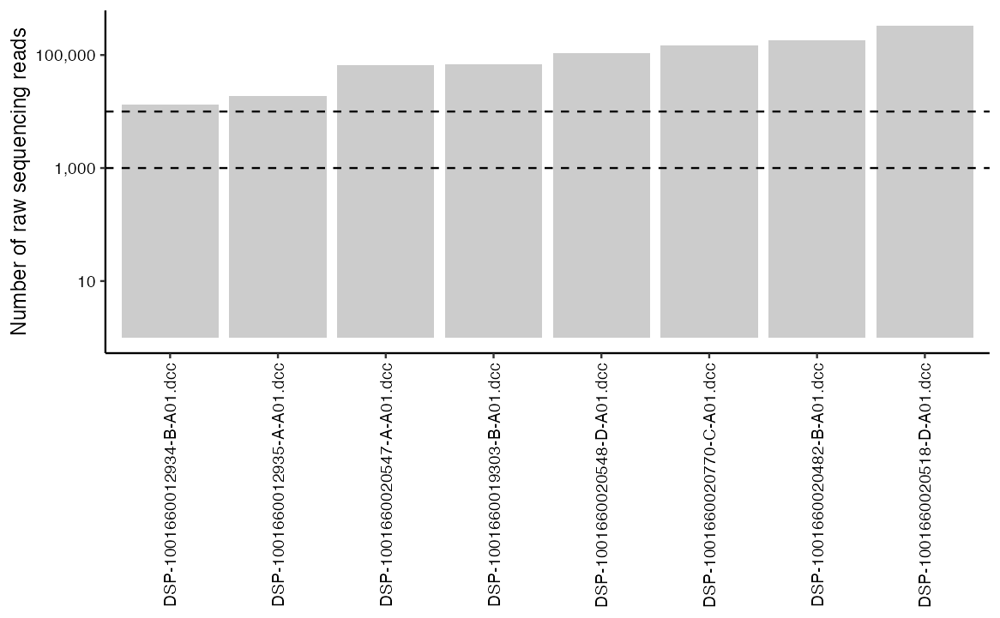
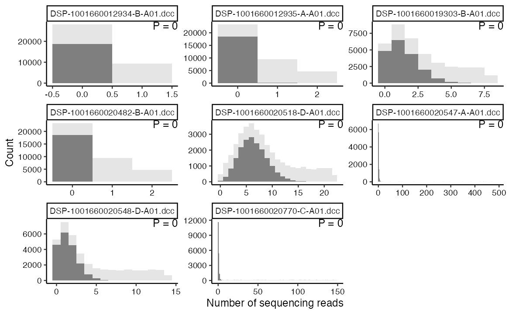
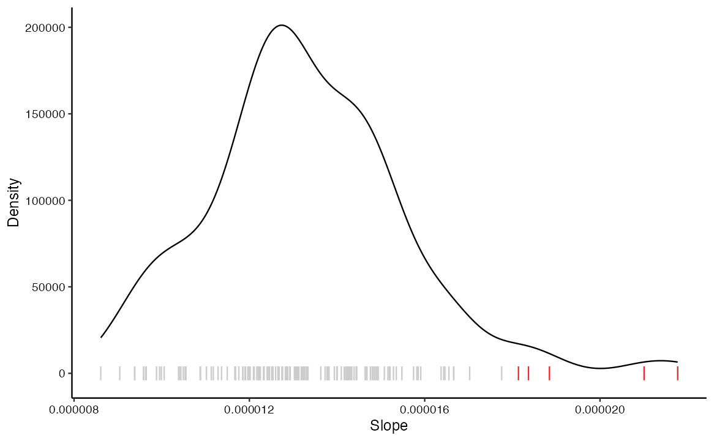
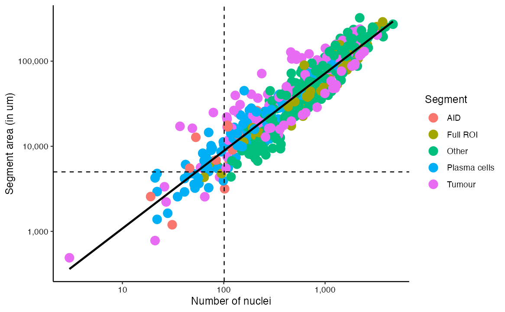
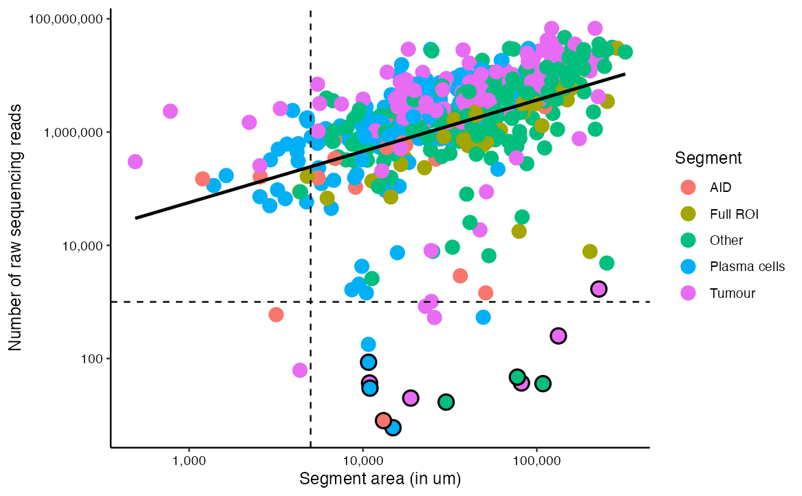
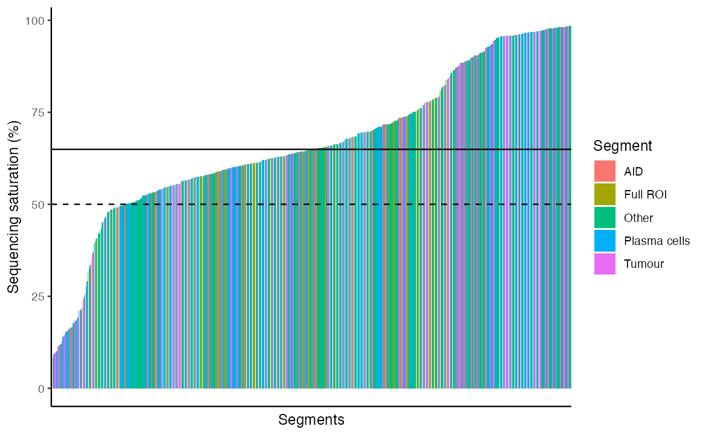
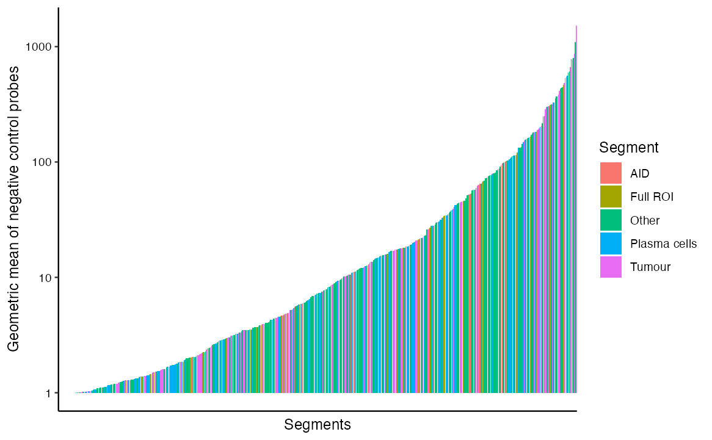
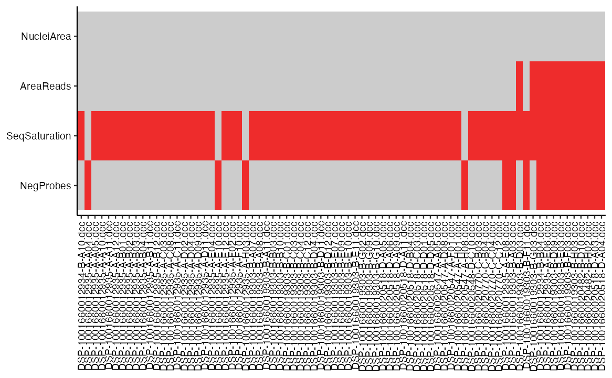

A guide to the dustR package
Jelmar Quist, Isobelle Wall
2024-05-03
quick_start.RmdIntroduction
In this vignette we present dustR, an alternative data
analysis workflow for GeoMx Whole Transcriptome Atlas (WTA) spatial
transcriptomics data. This R pacakge provides a series of functions that
assist in the quality assurance while minimising segment loss and
maximising gene detection rates.
Installation
The development version of dustR can be installed from
GitHub:
if (!require("devtools", quietly = TRUE))
install.packages("devtools")
devtools::install_github("jelmar-quist/dustR")Quick start
library(dustR)
library(GeomxTools)
library(scales)
library(robustbase)
library(mclust)
library(reshape)Preparing data
We recommend loading the data similiar to…
load("/Users/k1217281/Documents/GeoMX/EllieAlberts/materials/v2/eset.RData")No template control
A No Template Control (NTC) is used to assess contamination of the segments on the 96-well plate. As a general rule, NTCs with more than 1,000 but less than 10,000 sequencing reads may indicate contamination. count: values >1,000 could indicate contamination for the segments associated with this NTC; however, in cases where the NTC count is between 1,000- 10,000, the segments may be used if the NTC data is uniformly low (e.g. 0-2 counts for all probes).
checkNTC identifies the NTCs in the
NanoStringGeoMxSet object and reports (i) the number of
NTCs containing more than 1,000 sequencing reads, and (ii) the number of
segments that are at risk of contamination.
checkNTC(eSet)## Identified 8 out of 8 NTCs with >= 1000 sequencing reads.## 525 out of 525 segments may be at risk, please run checkNTCcounts() before proceeding.plotNTC can be used to plot the number of sequencing
reads for each NTC.
plotNTC(eSet)
Due to the risk of contamination in NTCs with more than 10,000
sequencing reads, we would recommend to discard any segments originating
from that same 96 well plate. For NTCs with more than 1,000, but less
than 10,000 sequencing reads, if the gene count distribution is uniform
(i.e. all genes are present at a similar level within that NTC),
segments from that 96 well plate can be used for further analysis.
checkNTCcounts assess and plot the gene counts distribution
of each NTC.
checkNTCcounts(eSet)
Based on the findings above, segments likely to be contaminated should be removed, along with the NTCs. In this vignette, we only remove the NTCs themselves.
Negative control probes
The GeoMx Whole Transcriptome Atlas (WTA) panel includes 139 negative control probes designed to estimate the background for each segment which could directly affect gene detection rate and any subsequent downstream analysis. Note that the negative control probes are designed to target sequences from the External RNA Controls Consortium (ERCC), which are not present in the human genome.
With plotNegativeProbes, the slope between overall
abundance of each negative control probe and the number of sequencing
reads is estimated.
plotNegativeProbes(eSet)
Assuming all negative control probes are present at an equal
abundance, this slope should be more or less similar between the 139
negative control probes. The density plot from
plotNegativeProbes suggests that for the majority of the
negative control probes this indeed the case. However, for 5 negative
control probes, their slope is considerably more steep, resulting in
increased background and reduced gene detection rates. We suggest to
remove these negative control probes using
filterNegativeProbes.
eSet <- filterNegativeProbes(eSet)## Removed 5 out of 139 negative control probes due to poor performance.Processing
Following the inspection of the NTCs and the cleaning of negative control probes, processing of the data can continue.
source("/Users/k1217281/Documents/resources/GeoMx/calculateNegativeProbe.R")
eSet <- shiftCountsOne(eSet)
eSet <- calculateNegativeProbe(eSet)After processing the data, we inspect four more segment characteristics to identify poor performing segments, as describes below.
Nuclei and area
The relationship between the number of nuclei and the segment area
provide insight in the performance of the segmentation and the nuclei
count for a given segment. A positive relation between nuclei and area
is expected. Using checkNuclei, segments where this
relationship deviates from the regression model are flagged.
eSet <- checkNuclei(eSet)## 0 out of 517 segments were flagged due to abnormal behavior.We can further visualise and inspect these findings using
plotNuclei.
plotNuclei(eSet)
Segments that deviate from the model will be highlighted by a black outline. In the data presented in this vignette, all segments performed as expected.
Area and sequencing reads
As per the recommendqations, the sequencing libraries should be prepared with ~100 sequencing reads per µm2 for each segment. By modelling the relationship between the area and the number of sequencing reads, segments with less sequencing reads than expected based on the area can be identified. This could be a result of the tissue quality or the incorrect pooling of the sequencing libraries.
eSet <- checkRawSequencing(eSet)## 12 out of 517 segments had less sequencing reads than expected and were flagged.checkRawSequencing suggests 12 segments had considerably
less sequencing reads than expected based on their area. We can
visualise and inspect this in more detail using
plotRawSequencing.
plotRawSequencing(eSet)
This plot suggests that while for for the majority of segments the number of sequencing reads is as expected, for some, the number of sequencing reads is less than expected, indiated by a black outline. We suggest to discard these segments.
Sequencing saturation
The sequencing saturation provides information about the quality of
the sequencing and if enoughn was sequenced to capture the full
diversity of the segment. checkSaturation calculates the
sequencing saturation and flags segments with a saturation below 50%
(default).
eSet <- checkSaturation(eSet)## Removed 73 out of 517 segments due to low sequencing saturation.73 segments were flagged as having reduced sequencing saturation. We
can visualise and inspect the saturation further using
plotSaturation.
plotSaturation(eSet)
While the median saturation is 80%, there are some samples that have a sequencing saturation below 50%. For further analysis at this time, we suggest these segments to be discarded. However, in practice, you could opt to resequence these segments to improve their saturation.
Geometric mean of negative control probes
To calculate the background noise of each segments, the geometric
mean of the negative control probes is used. We can assess the geometric
mean across all segments using plotGeoMeanNegProbes.
plotGeoMeanNegProbes(eSet)
The barplot highlight the large range of the geometric mean across
the segments. Overall, a low geometric mean is considered good, however,
segments with a geometric mean that is too low (default 1) tend to have
a poor gene detection rate. These segments can be flagged using
checkGeoMeanNegProbes.
eSet <- checkGeoMeanNegProbes(eSet)## The average gene detection rate in segments with a NegGeoMean <= 1 is 0.16%## The average gene detection rate in segments with a NegGeoMean > 1 is 18.22%## 17 out of 517were flagged due to a low geometric mean of the negative control probes.Not only does this function flag segments with a low geometric mean, it also calculates the average gene detection rate for these segments and compares it with the remaining segments. Given that the gene detection rate in segments with a geometric mean of the negative control probes is less than 1%, we suggest these to be discarded.
Filter segments
plotFilterSegments(eSet)
eSet <- filterSegments(eSet)## Removed77 out of 517segments that were flagged.Additional functions
Pseudobulk
createPseudobulk does exactly what the name implies, it
creates pseudobulk data by aggregating the gene counts from all segments
for a given sample. The function also updates the Segment, Nulcei and
Area columns, as well as the reported number of sequencing reads. Sample
definitions are obtained from id.vars, which should
specificy the appropiate column in the pData.
load("/Users/k1217281/Documents/GeoMX/EllieAlberts/materials/v2/eset.RData")
eSet_pseudobulk <- createPseudobulk(eSet, id.vars = "Slide Name")
ncol(eSet)## Samples
## 525
ncol(eSet_pseudobulk)## Samples
## 9A second flavour of the function was implemented to generate
pseudobulk for each ROI. I.e. if for a given ROI there are a PanCK and a
CD45 segment, these segments will be collated together. Note that the
function still requires the user to specify the appropiate
id.vars to prevent segments from different samples to be
aggregated.
load("/Users/k1217281/Documents/GeoMX/EllieAlberts/materials/v2/eset.RData")
eSet_pseudobulk <- createPseudobulk(eSet, id.vars = "Slide Name", bySlide = FALSE)
ncol(eSet)## Samples
## 525
ncol(eSet_pseudobulk)## Samples
## 256After creating pseudobulk data it is recommended to perform a quality control.
SpatialGE
spatialGE is an R package design for analysing and
visualising spatial transcriptomics data.
require(spatialGE)## Loading required package: spatialGE
load("/Users/k1217281/Documents/GeoMX/LEAP_SA_v3/materials/SA_ReadInOnly.RData")
eSet <- eSet[,!is.na(eSet$Segment)]
eSet <- eSet[,eSet$Segment == "PanCK+"]
eSet_STlist <- createSTlist(eSet, id.vars = "LEAP_ID")## Found list of dataframes.
## Matching gene expression and coordinate data...
## Converting counts to sparse matrices
## Completed STlist!
##